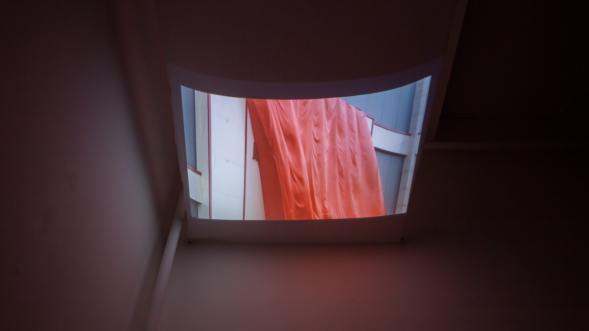
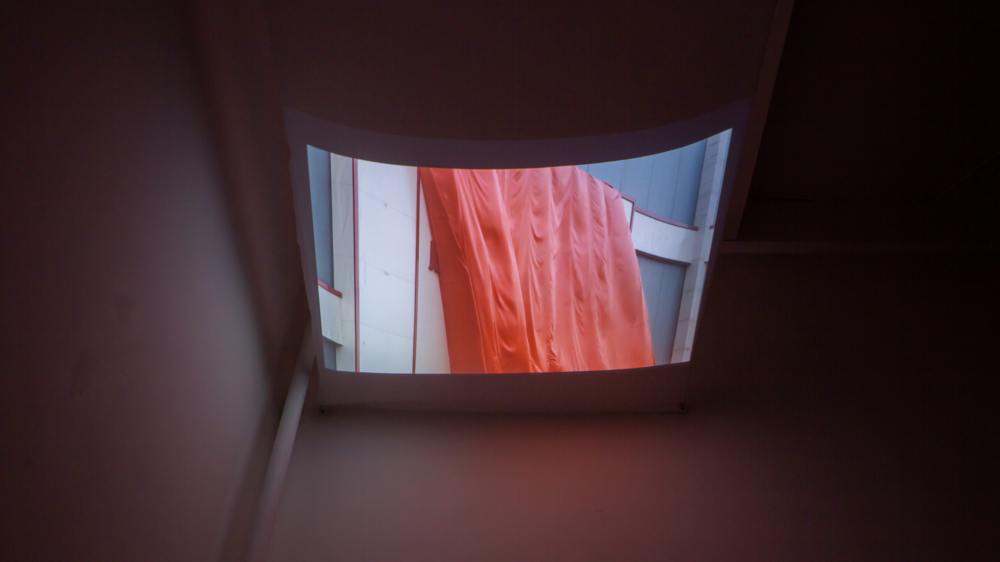

(Original duration: 19m57s)
A collector and gleaning of videos and sound bites gathered throughout the year of 2021 through 2022 in China. Camera is my body. Everyone needs to raise the phone to shoot, to scan (QR codes) in order to show our identity and prove our existence, while inevitably submitting and relinquishing our data without opportunities to opt out… Are there still moments where we can permeate the screen to breathe and exhale? Singing through the releasing of the energy, via the screen. These videos are every honest moment I chose to raise the camera again after having decided to put it and and not shoot anymore. Whether it was out of relief, in fluke, or still with fear… The editing process was to assemble all fragments together without shortening each clip. Every beginning and end of each video and sound clip was the moments I pressed and released the record button on the phone screen.
Also installed and shown as a video installation at my solo show 捕/Capture at The Pond Gallery in Chengdu, China.
The video was projected upwards at a white cloth, hanging down the ceiling of the space. The audience was invited to sit or lie down on the mat in this intimate space, wearing headphones and watching the video from above the head.
 
